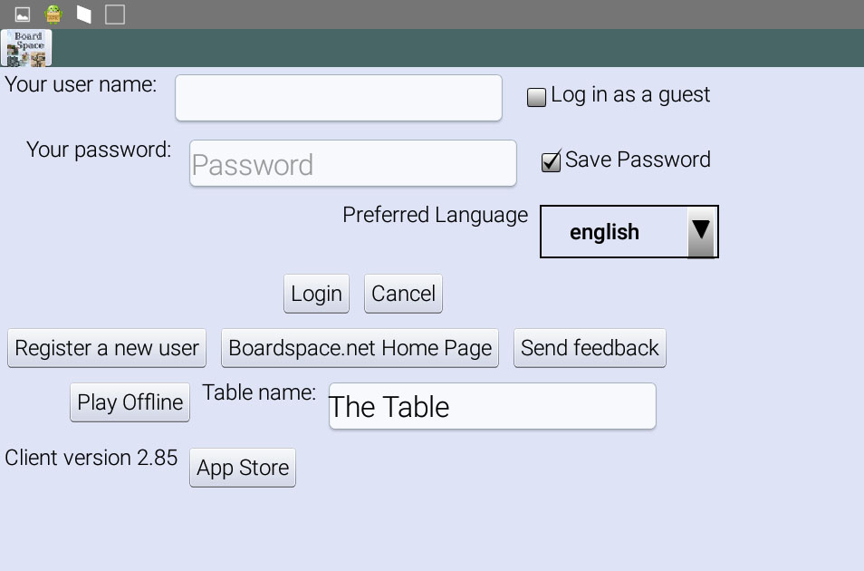
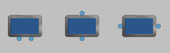
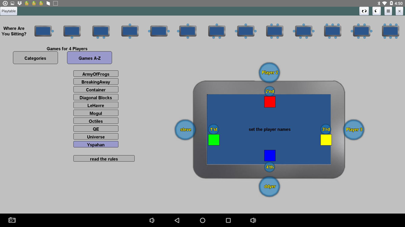
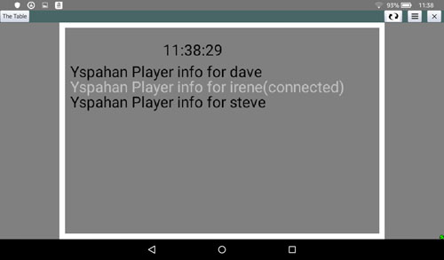
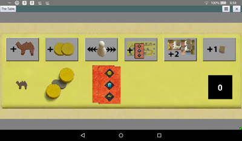

| The first bullet point is that Playtable is an android device; you use the same Boardspace.net android app. If you are using it to play games on line, there's no difference at all (except that you'll be looking down instead of across). This guide explains what might be different if you're using a Playtable to play Boardspace games off line. |  |
| login screen  | If
the table has been recognized as a playtable, the login screen will
include a Table Name field. Naming the table is optional, but
it appear to potential partners on the same network. If you're blessed to have more than one playtable, it will help you decide which one to connect to. To use the table to play games locally, click on Play off line to enter the game setup screen. Given the size and weight of the playtable, you won't be passing the table around, you'll be seating yourself around it. | |
 | Instead of the traditional lobby, playing on a table is organized organized by where you intend to sit. Select
the the most appropriate seating chart from the row along the top.
This also implies how many players there will be, and acts as a
filter on the games that are available to play. For example, for 2 player games there are 3 plausible seating charts,  Ideally, the layouts for the actual games will be optimized for the selected chart. Achieving the ideal will be an ongoing process :) | |
|  | After
you've selected the seating arrangement, click on the seat bubbles to
set the player names. After all the players are named the start
button will appear. Where appropriate to the game, you can
also select the starting player or assign the color to players. For games such as Yspahan, which have some hidden information, it will be possible to connect other mobiles as side screens, running the same boardspace.net app to view the hidden information privately. See below. |
| When you launch the boardspace.net app, and there is a playtable nearby which is also running the boardspace.net app, you'll see an extra Join button next to the Play Off line button. Join! | |
|  If there is a game in progress, you'll see an option menu like this, which allows you to connect to the game and receive appropriate content for your player. Generally speaking, the screen you get to next will be recognizable and appropriate to the game. | For example the private
screen for Yspahan will look something like this:  where the cards are hidden from the other players. You can click on the cards to see them, and also can select them to be played when appropriate. |